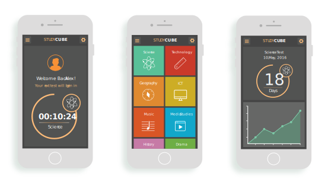

Study Cube is an interactive educational device, created during a micro-publications masterclass. Your own personal study buddy to test your knowledge on a wide range of subjects.
BRIEF
StudyCube was created over a short, intensive four day masterclass on 'micro-publications'. The masterclass explored the important of content, how content is changing and how we consume content. The brief was to develop an idea that would deliver short, easy to consume content. The goal was to create a non-functional, visualised prototype that could then be developed further. We had to visualise the delivery platform of the publications whilst considering elements such as content, frenquency, platform and audience.
APPROACH
The masterclass began with idea generating as a group, exploring possible ideas through paper protyping. After forming multiple possible outcomes I was enthusiastic about starting to work on my own idea. My idea like always began with mind-mapping and sketching. I decided to develop the idea of edutcational platform that would deliver regular facts, tests and print revision que cards to help students with preparation for a test.
The delivery platform for my idea is an app that is then linked to a cubed device. The app is programmed with the user's personal subjects. It creates a study timetable that schedules study sessions with the StudyCube. Users can view countdowns to tests and track their progress for each subject.
The cube communicates with the user by counting down to a scheduled test, asking a number of questions and indicating if the answer is correct or incorrect by glowing green or red.
After each study session the cube will print clean, organised, colour catagorised que cards with revisions notes based on the topics covered.

FINISHED OUTCOME
For the final design I imagined what all aspects of the design would look like. I moved into illustrator and created designs for the cube, app screens and the physical revision cue cards. I designed four app screens, focusing on type, colour, iconography and layout to ensure the designs were clean, consistent and engaging.